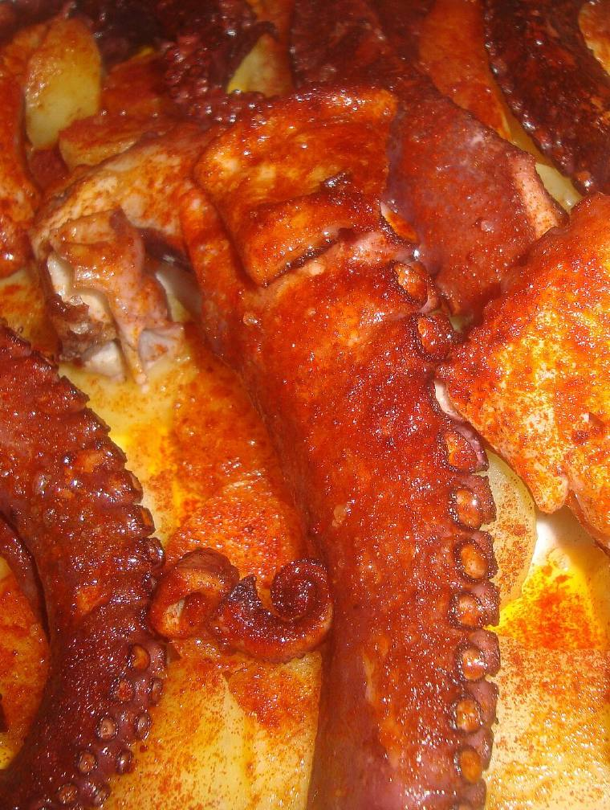

Entrées espagnoles et tapas

Entrées espagnoles et tapas
Pulpo a la gallega
Poulpe à la galicienne
Préparation : 20 min
Cuisson : 1 h
Ingrédients (pour 4 personnes)
- 2 kg de poulpe
- 1 oignon
- 20 cl d’huile d’olive
- 1 cuillère à soupe de paprika doux
- 1 cuillère à soupe de paprika fort
- gros sel
Quantités adaptées. Les temps de cuisson ne sont pas recalculés.
- Vider le poulpe, retirer bec et poche d’encre, le battre pour l’attendrir, le laver.
- Dans l’eau bouillante avec l’oignon, le plonger et le ressortir trois fois.
- Le cuire 30 à 60 minutes, jusqu’à tendreté.
- Égoutter, couper aux ciseaux en morceaux de 2 à 3 cm.
- Servir chaud sur une planche, avec gros sel, paprikas et huile.
AstuceUn poulpe congelé puis décongelé au frigo n’a pas besoin d’être battu.
D’après Spain.info, office espagnol du tourisme. Traduit et reformulé.